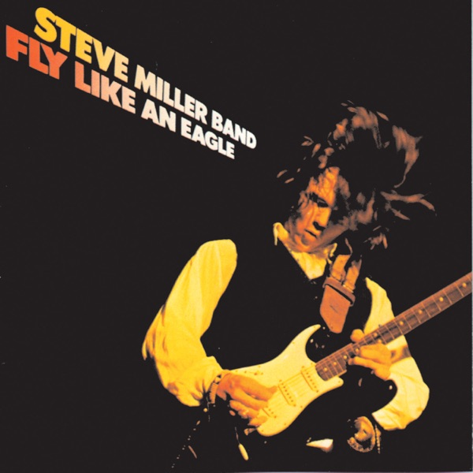

Fly Like An Eagle
Steve Miller Band
Upgrade idea: Mobile Fidelity MFSL 1-021 (1979) is the audiophile half-speed master benchmark. Early KP (Ken Perry) Capitol stampers from the original 1976 pressing are also highly regarded — your F38 stamper is a later lacquer generation from the same cutting session.
- Original release
- 1976
- Pressing year
- 1976
- Country
- US
- Format
- Vinyl LP, Album (Jacksonville Pressing)
- Label / Cat#
- Capitol Records – ST-11497
- Genres
- Rock, Pop
- Styles
- Classic Rock, Blues Rock, Pop Rock, Psychedelic Rock
- Discogs release
- 537047
- Discogs master
- 82406
- Apple Music
- Fly Like an Eagle
- Wikipedia
- Fly Like An Eagle
Production notes
Tracklist (Discogs)
| A1 | Space Intro | 1:15 |
| A2 | Fly Like An Eagle | 4:42 |
| A3 | Wild Mountain Honey | 4:50 |
| A4 | Serenade | 3:10 |
| A5 | Dance, Dance, Dance | 2:16 |
| A6 | Mercury Blues | 3:43 |
| B1 | Take The Money And Run | 2:48 |
| B2 | Rock 'N Me | 3:05 |
| B3 | You Send Me | 2:40 |
| B4 | Blue Odyssey | 1:00 |
| B5 | Sweet Maree | 4:16 |
| B6 | The Window | 4:19 |
Tracklist (Apple Music)
| 1 | Space Intro | 1:15 |
| 2 | Fly Like an Eagle | 4:42 |
| 3 | Wild Mountain Honey | 4:49 |
| 4 | Serenade | 3:11 |
| 5 | Dance, Dance, Dance | 2:17 |
| 6 | Mercury Blues | 3:43 |
| 7 | Take the Money and Run | 2:50 |
| 8 | Rock'n Me | 3:07 |
| 9 | You Send Me | 2:42 |
| 10 | Blue Odyssey | 0:50 |
| 11 | Sweet Maree | 4:16 |
| 12 | The Window | 4:16 |
Personnel & credits
- John Van Hamersveld — Artwork [Art]
- Mario Casarini — Artwork [Art]
- Lonnie Turner — Bass
- Gary Mallaber — Drums, Percussion
- Mike Fusaro — Engineer [Track Engineer]
- John Palladino — Executive-Producer
- Win Kutz — Mastered By [Master Mix Assisted By]
- Jim Gaines — Mastered By [Master Mix]
- David Stahl (2) — Photography By [Back]
- Susan McCardle — Photography By [Front]
- Steve Miller — Producer
- Steve Miller — Vocals, Guitar, Synthesizer [Roland], Sitar
Identifiers
- Pressing Plant ID: 0 (Stamped in runout areas)
- Rights Society: ASCAP
- Rights Society: BMI
- Price Code: 0698
- Matrix / Runout: ST 1-11497 (Label Side A)
- Matrix / Runout: ST 2-11497 (Label Side B)
- Matrix / Runout: ST-1-11497-F38 #3 (Variation 1 Hand Etched Side A)
- Matrix / Runout: ST-2-11497-Z12#2 (Variation 1 Hand Etched Side A)
- Matrix / Runout: KENDUN -B- (Variation 1 Additional Runout Marking Side B Stamped -B- Hand Etched)
- Matrix / Runout: ST-1-11497-Z11 (Variation 2 Hand Etched Side A)
- Matrix / Runout: ST-2-11497-Z11 #2 (Variation 2 Hand Etched Side B)
- Matrix / Runout: KENDUN -A- (Variation 2 Stamped In Side A & B)
- Matrix / Runout: ST1 11497 F22 #5 MASTERED BY CAPITOL 0 (Variation 3 Side A: Etched, & 0 MASTERED BY CAPITOL & 0 stamped)
- Matrix / Runout: ST-2-11497- Z10 ² #4 KENDUN -B- 0 (Variation 3 Side B: Etched, KENDUN & 0 stamped)
- Matrix / Runout: ST-1-11497-F-27• MASTERED AT CAPITOL (Variation 4 Side A: Etched, MASTERED BY CAPITOL stamped)
- Matrix / Runout: ST-2-11497- Z14 0 KENDUN -B- C1 (Variation 4 Side B: Etched, KENDUN & C1 stamped)
- Matrix / Runout: ST-2-11497- Z13 - KENDUN -A- 2 (Variation 6 Hand Etched Side A, KENDUN &2 stamped)
- Matrix / Runout: ST-2-11497- Z14 KENDUN -B- ! (Variation 6 Side B: Etched, KENDUN stamped)
- Matrix / Runout: ST-1-11497-Z10 #1 KENDUN -B- 0 (Variation 7 Hand Etched Side A, KENDUN Stamped and 0 stamped)
- Matrix / Runout: ST-2-11497-Z10 #2 KENDUN -B- 0 (Variation 7 Hand Etched Side B, KENDUN stamped and 0 stamped)
- Matrix / Runout: ST-1-11497- Z14 KENDUN -B- .- (Variation 8 Side A: Etched, KENDUN stamped)
- Matrix / Runout: ST-2-11497- Z13 KENDUN -A- 2 (Variation 8 Side B: Etched, KENDUN stamped)
- Matrix / Runout: ST-1-11497-G-32 3 MASTERED BY CAPITAL (Variation 9 Side A: Etched, MASTERED BY CAPITAL & 3 stamped)
- Matrix / Runout: ST-2-11497-Z14 KENDUN -B- 4 (Variation 9 Side B: Etched, KENDUN & 4 stamped)
- Matrix / Runout: ST-1-11497-Z18 #5 KENDUN -A- 0 (Variation 10 Side A: Etched, KENDUN stamped)
- Matrix / Runout: ST-2-11497-Z10 #2 KENDUN -B- 0 (Variation 10 Side B: Etched, KENDUN stamped)
- Matrix / Runout: ST-1-11497 - F•31 o 2 (Variation 11 Side A: Etched & 0 stamped)
- Matrix / Runout: ST-2-11497 - F-24• o 2 (Variation 11 Side B: Etched & 0 stamped)
Notes
Jacksonville pressing variant.
Manufactured by Haworth Enterprises
A Haworth Enterprises production
℗1976 Haworth Enterprises
Capitol is a registered trademark of Capitol Records, Inc., licensed to Haworth Enterprises
All songs ASCAP, ©1976 Sailor Music, except A6 ©1970 Tradition/B Flat Music Co./BMI and B3 ©1957 Kags Music Corp./BMI
Engineered at C.B.S. San Francisco
Master mix at Kaye/Smith, Seattle
Fly Like an Eagle is Steve Miller Band’s tenth studio album, released in May 1976 on Capitol Records, and the commercial breakthrough that transformed Miller from a respected San Francisco psychedelic rock veteran into a mainstream superstar. The album produced three Top 10 singles — “Fly Like an Eagle,” “Rock’n Me,” and “Take the Money and Run” — and reached #3 on the Billboard 200. Its blend of smooth, hook-driven rock, subtle funk influences, and Miller’s laid-back California delivery defined a template for late-1970s FM rock that countless artists would follow.
The album has an effortless quality that belies its craft — Miller’s production is deceptively simple, with space and warmth built into every track. The title track’s synthesizer intro and groove-locked rhythm section, “Rock’n Me“‘s Chuck Berry-influenced swagger, and the storytelling efficiency of “Take the Money and Run” showcase a songwriter and bandleader at the height of his powers. The album has sold over 10 million copies worldwide.
This 1976 original US Capitol pressing (catalog ST-11497) was mastered at Capitol Studios in Hollywood — one of the great recording and mastering facilities in American music. The matrix
ST-1-11497-F38 #3identifies this as a Capitol-mastered pressing, withF38indicating the lacquer generation from the original cutting session. Capitol’s in-house mastering consistently produced warm, smooth pressings well-suited to Miller’s sonic aesthetic.About this 1976 US pressing (Vinyl, LP): Capitol Records catalog ST-11497, original 1976 US pressing. Mastered by Capitol Studios. Matrix ST-1-11497-F38 #3.